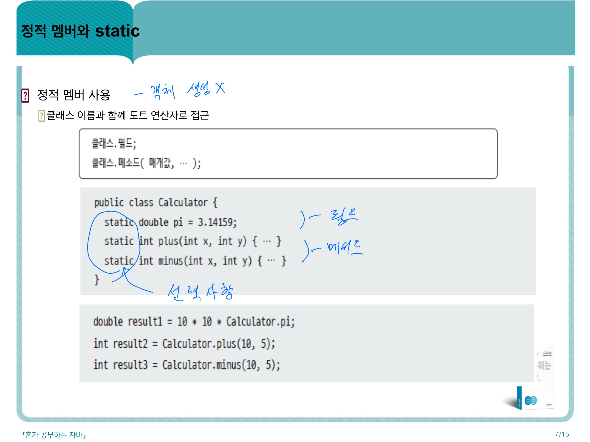
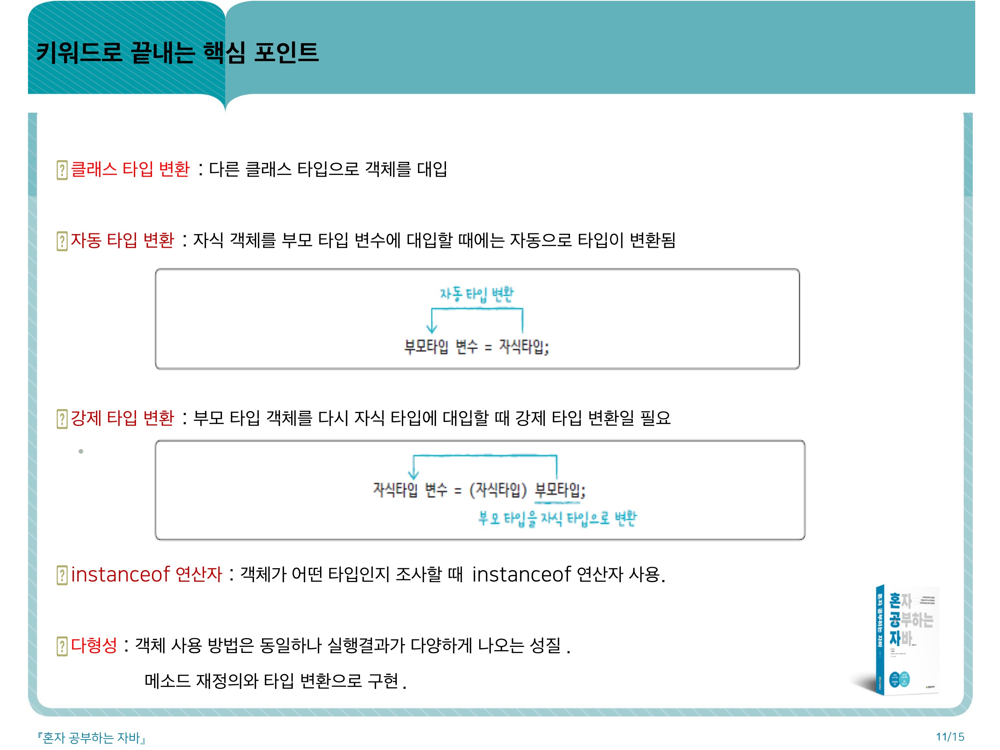
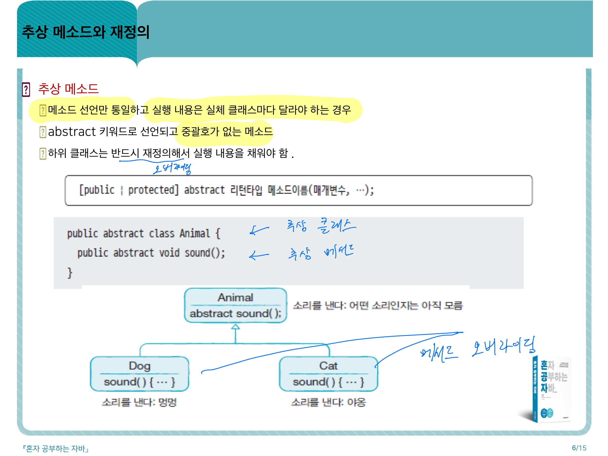
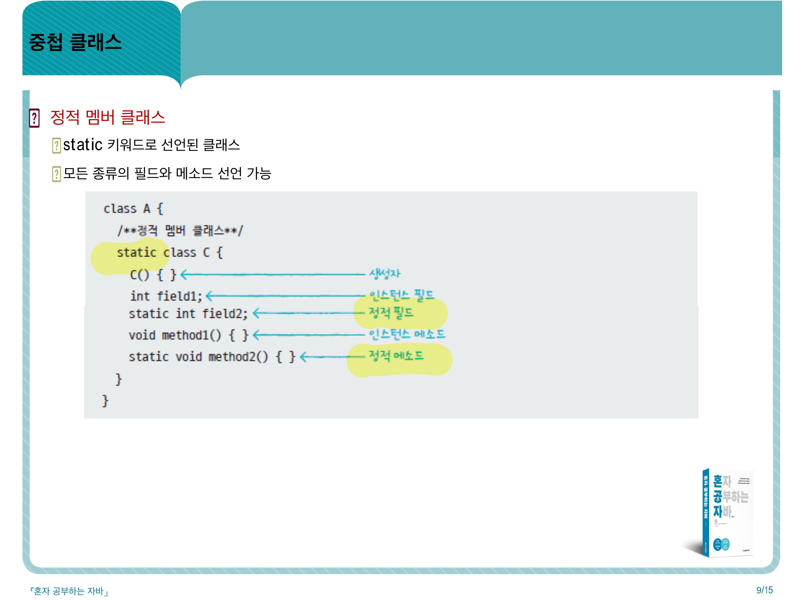
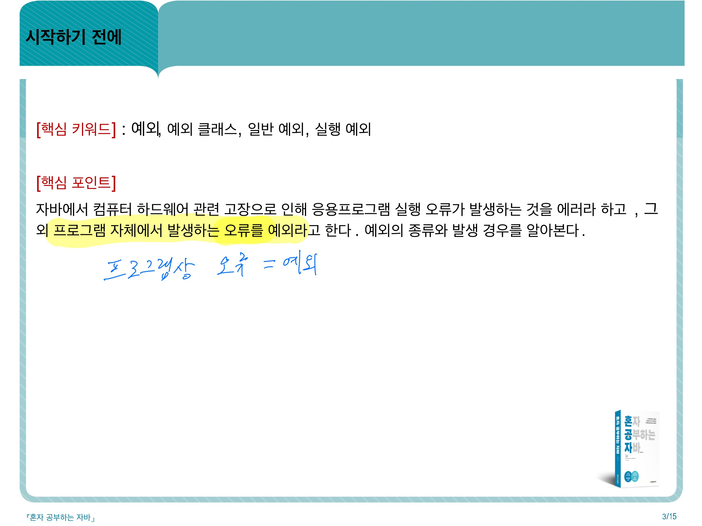
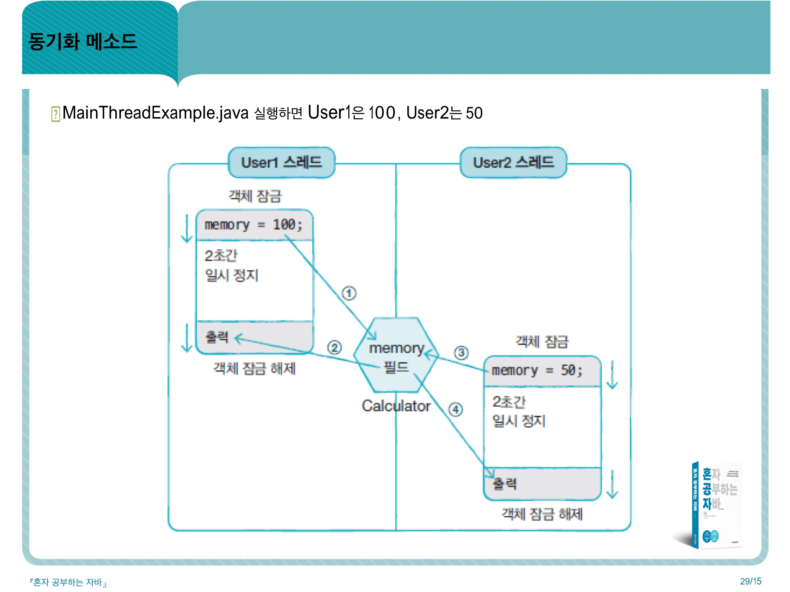

-
자바 시작하기
- JDK 설치하기
- https://www.oracle.com (11버젼 수업용)
- https://www.openjdk.java.net (회사용)
- 환경설정
- 내 pc , 설정, 고급시스템설정, 고급(탭), 환경변수, 시스템변수 란에 새로만들기, 변수이름 : JAVA_HOME, 디렉토리 찾아보기,
자바 경로 찾아 넣어주기, 확인, 스크롤내려서 path ,편집 ,새로만들기, %JAVA_HOME%\bin, 확인, 확인, 확인 - 윈도우 7 : 시작, 제어판, 시스템및보안, 시스템, 고급시스템설정
- 윈도우 10: 검색, 제어판 입력 후 선택 , 윈도우7 과 동일
- 이클립스 개발 환경 구축
- 싸이트 : http://www.eclipse.org (eclipse-java-2021-03-R-win32-x86_64)
- 무료 오픈 소스 통합 개발 환경(IDE) 제공해주는 툴
- [1단계] 프로젝트 생성
- 변수
- 기본타입
-
형 변환
- 자동 타입 변환
- 강제 타입 변환
- 문자열 결합 연산
-
입출력
- 모니터로 변수값 출력하기
- 키보드에서 값 입력
-
연산자
-
if, switch문
- if문
- if~else~문
- if~, else if~, else~문
- switch문
-
for, while문
-
참조 타입
-
클래스
생성자 : 클래스로부터 new연산자로 객체를 생성할때 호출되어 객체의 초기화를 담당 -
상속
-
추상클래스
353_추상 클래스
-
인터페이스
366_인터페이스
-
중첩클래스와 중첩인터페이스
393_중첩클래스와 인터페이스
-
익명 객체
425_익명객체1
-
예외
457_예외정의
-
java.lang패키지
-
컬렉션 프레임워크
-
Thread
-
입출력 스트림
-
코딩테스트
-
비트연산자
-
자바 유용한 메서드
1. length
- arrays(int[], double[], String[])
- length는 배열의 길이를 알고자 할때 사용된다.
2. length()
- String related Object(String, StringBuilder etc)
- length()는 문자열의 길이를 알고자 할때 사용된다.
3. size()
- Collection Object(ArrayList, Set etc)
- size()는 컬렉션프레임워크 타입의 길이를 알고자 할때 사용된다.
.indexOf( "찾을 특정 문자" , "시작할 위치" ) 이런식으로 사용해 주면된다.
"-1" 을 반환하는 이유는 위에서 설명 했다시피 찾지를 못했기 때문에 그런것이다.
lastindexOf() 는 특정 문자나 문자열이 뒤에서부터 처음 발견되는 인덱스를 반환하며
만약 찾지 못했을 경우 "-1"을 반환합니다.
숫자 → 이진수(문자열)로 변환
1
Integer.toBinaryString(num);
num은 일반 숫자도 가능하지만, HEX 형태로 표기도 가능하다.
1
ex) Integer.toBinaryString(0xFFFF); //1111111111111111
-
개인퀴즈
JDK 설치 후 CMD에서 설치완료됐는지 체크

번거로우니 이클립스를 설치해주자

변수 선언 규칙이다.
char(한글자 문자형)이 정수형 타입에 속한다!
실수는 float보다 double을 더 자주 쓴다.
long타입은 int타입 허용 범위 초과시 대입하려는 값 뒤에 L을 붙여줘야한다.
실수는 float보다 double을 더 자주 쓴다.

타입별 허용범위 참고
자바 진수형 표기방식(2진수(진법),8진수(진법),10진수(진법),16진수(진법))

한글자는 작은따옴표
쌍따옴표는 한글자라도 문자열 표시이므로 char타입에 대입 불가함

출력참고

실수 범위 참고.
float a= 10.0f;(f표기해야함)
double b= 10.0; (간결하고 허용범위 넓음)

5e2 같은 방식을 정규화된 표현이라 하는데 5.0x10^2방식이라 실수형타입

-자동 타입 변환 : 값 허용 범위가 작은 타입이 큰 타입으로 저장될 경우
-기본 타입의 허용 범위 순서 알아 두기
실수는 정수보다 크며 각 타입 내에서 허용범위 순에 따른다.
| 메소드(사용 예) | 설명 |
| String x="10"; byte value=Byte.parseByte(x); |
문자열을 정수형으로 데이터 타입 변환 |
| Short.parseShort(x) | 문자열을 정수형으로 데이터 타입 변환 |
| Integer.parseInt(x) | 문자열을 정수형으로 데이터 타입 변환 |
| Long.parseLong(x) | 문자열을 정수형으로 데이터 타입 변환 |
| Float.parseFloat(x) | 문자열을 실수형으로 데이터 타입 변환 |
| Double.parseDouble(x) | 문자열을 실수형으로 데이터 타입 변환 |
| Boolean.parseBoolean(x) | 문자열을 논리형으로 데이터 타입 변환 |
| String str1=String.valueOf(10); | 정수형을 문자열로 |
| String str1=String.valueOf(3.14); | 실수형을 문자열로 |
| String str1=String.valueOf(true); | 논리형을 문자열로 |
.jpg)
- 강제 타입 변환 : 값 허용 범위가 큰 타입이 작은 타입으로 저장될 경우
- byte byteValue = (byte) intValue;
==>(byte)부분이 강제 타입 변환부분이다.
.jpg)
- 자동 타입 변환 예외 잘 알아두기
- 범위를 알면 해결되는 예외 처리방식이긴 하다.
.jpg)
- 강제 전환
.jpg)
- 바이트+바이트는 바이트가 아니다 int로 써야 에러가 안남.
.jpg)
- 피연산자 중 하나가 double 타입일 경우 피연산자도 double타입으로 자동 변환
.jpg)
- 각각 계산되는 타입에 유의하여 볼 것.
제일 위는 정수형끼리 계산된 후 실수형으로 바뀜
.jpg)
예제 참고
.jpg)
+연산에서의 문자열 자동 타입 변환
==> 좌측부터 우측으로 데이터형을 봐가며 연산된다.
char&키코드
키코드로 작성할 경우 main void에 throws Exception 을 꼭 써줘야하며,
키코드로 소문자 a를 입력하고 엔터키를 누르면 엔터키의 키코드 값= 숫자 10,13이
입력되므로
17,18번째 줄과 같이 키코드 2줄 을 입력해줘야 하며
28번을 else구문으로 마무리해버리면 키코드값 10,13이 else값에 포함되어
else구문 처리 시 출력되어 버린다.
| 메소드 | 설명 |
| System.out.println(변수) | 괄호 안 출력 및 줄 바꿈 |
| System.out.print(변수) | 괄호 안 출력 |
| System.out.printf("형식문자열(%d %.2f %s",정수,실수(소수 둘째자리까지만), 문자열) | 괄호 안 문자열 형식대로 내용 출력 |
| 메소드 | 설명 | 비고 |
| int x =System.in.read() char ch = (char)System.in.read(); //main void(String[] args)뒤에 throws Exception 적어주기 |
키보드에서 키를 입력할 때 프로그램에서 숫자로 된 키코드를 읽음 | |
| Scanner sc = new Scanner(System.in); String a = sc.nextLine(); int a = sc.nextInt(); double a = sc.nextDouble(); byte a = sc.nextBytes(); long a = sc.nextLong(); short a = sc.nextShort(); float a = sc.nextFloat(); int a = Integer.parseInt(sc.nextLine()); double a = Double.parseDouble(sc.nextLine()); = Byte.parseByte(sc.nextLine()); = Short.parseShort(sc.nextLine()); = Integer.parseInt(sc.nextLine()); = Long.parseLong(sc.nextLine()); = Float.parseFloat(sc.nextLine()); = Double.parseDouble(sc.nextLine()); |
자바가 제공하는 Scanner클래스를 이용하면 통문자열 읽을 수 있음 | |
| System.out.printf("형식문자열(%d %.2f %s",정수,실수(소수 둘째자리까지만), 문자열) | 괄호 안 문자열 형식대로 내용 출력 |
==>키코드 는 1개 문자만 입력 받을 수 있다는 한계점 때문에 잘 안쓰임.
==>키코드 표
==>키코드를 쓸땐 void main 선언 후 throws Exception을 써줘야 한다.
==>스캐너 입력 양식
==>스캐너를 쓸땐 라이브러리에서 3행문구를 필수로 불러와야 한다.
==>short와 char모두 2byte크기 범위이지만 short는 음수값을 가지므로 자동타입변환 안된다.
==> char 타입 다루는데 익숙하지 않음.

==>기본 타입 값 비교는 ==을 사용
==>문자열 비교는 equals() 메소드 사용
==>boolean re=str.equals("java");
-->(str1) 위 그림 오타
==>
==>상수 : final 타입 변수(대문자) = 상수값;
if(조건식)
{실행문
실행문}
그러나
if(조건식)
실행문
==>실행문 한 줄일땐 중괄호 안 써도 된다.

* 랜덤(random) 메소드 = 무작위 메소드 = 난수 --> 0.0 <= Math.random() < 1.0 --> 0.0*45 <= Math.random()*45 <1.0*45 --> (int)0.0 <= (int)Math.random()*45 <(int)45.0 --> (int)Math.random()*45+1 ※ 아래 제시한 임의의 난수를 생성하는 랜덤메소드를 정의하여 보시오. 아래의 문제를 풀고 규칙을 찾아내어 이해하세요! 문제1. 0부터 9까지 임의의 난수 생성 --> (int)Math.random()*10 문제2. 1부터 10까지 임의의 난수 생성 --> (int)Math.random()*10+1 문제3. 1부터 100까지 임의의 난수 생성 --> (int)Math.random()*100+1 문제4. 100부터 500까지 임의의 난수 생성 --> (int)Math.random()*401+100 문제5. 151부터 200까지 임의의 난수 생성 --> (int)Math.random()*50+151 문제6. 50부터 100까지 임의의 난수 생성 --> (int)Math.random()*51+50 문제7. 0부터 100까지 임의의 난수 생성 --> (int)Math.random()*101 문제8. 0부터 99까지 임의의 난수 생성 --> (int)Math.random()*100 문제9. 1부터 45까지 임의의 난수 생성 --> (int)Math.random()*45+1 문제10. 1부터 3까지 임의의 난수 생성 --> (int)Math.random()*3+1 문제11. 11부터 15까지 임의의 난수 생성 --> (int)Math.random()*5+11 문제12. 1000부터 1200까지 임의의 난수 생성 --> (int)Math.random()*201+1000 문제13. 200부터 350까지 임의의 난수 생성 --> (int)Math.random()*151+200 문제14. 10부터 20까지 임의의 난수 생성 --> (int)Math.random()*11+10 문제15. 900부터 999까지 임의의 난수 생성 --> (int)Math.random()*100+900 문제16. 500부터 600까지 임의의 난수 생성 --> (int)Math.random()*101+500 문제17. 1부터 15까지 임의의 난수 생성 --> (int)Math.random()*15+1 문제18. 31부터 50까지 임의의 난수 생성 --> (int)Math.random()*20+31 문제19. 1001부터 2000까지 임의의 난수 생성 --> (int)Math.random()*1000+1001 문제20. 0부터 2까지 임의의 난수 생성 --> (int)Math.random()*3 *조건식 만들기 ch는 영문 대문자이다. ch>=65 && ch<=90 혹은 ch>='A' && ch<='Z' number는 숫자이다. number>=45&&number<=57 혹은 number>='0' && number <='9'

자바식 for문 문법 봐두기

do while문의 실행문은 최소 한번은 실행된다.
별 내용 없음
.jpg)
별 내용 없음

살짝 어려운 문제
생성방식1- new객체 생성, 공간에 값으로 확보
int[] scores;
scores = new int[] { 83, 90, 87 };
생성방식2- new객체 생성, 공간에 값으로 확보
int scores[];
scores = new int[] { 83, 90, 87 };
생성방식3- 공간에 값으로 확보
int[] scores= {83,90,87};
String[] oldStrArray = { "java", "array", "copy" };
>>>>>>> 8e548a36273dbd1d8ef6ea0eb05a85fe50ac7db5
생성방식4 - 공간만 확보
int[] arr1 = new int[3];
String[] newStrArray = new String[5];
생성방식5 - 2차원 배열 공간만 확보
int[][] mathScores = new int[2][3];
데이터 타입 종류
문자열 비교는 무조건 .equals()
문자열 비교는 무조건 .equals() !!
문자열 비교는 무조건 .equals() !!
메모리 개념, 힙, JVM, 메소드
null상태에서 참조할 경우 null pointer Exception 에러

null값 대입 가능.
자바는 메모리 자동 제거한다.
null타입 계산할때 방식.
new는 객체 생성 연산자.
데이터를 연속된 공간에 나열하고 인덱스 부여한 자료구조.
같은 타입의 데이터만 저장할 수 있음.
한번 생성된 배열은 길이를 늘리거나 줄일 수 없음.
배열 선언,생성 방법
배열 생성 방법
배열 생성 방법
각 배열 초기화시 기초값
->정수 : 0
->실수 : 0.0
->문자열 : null
어디 써먹는고?
문자열 비교는 무조건 .equals() !!

배열 복사

배열을 이용한 유용한 for문

키워드
,249 기본생성자
,250 생성자 선언
,251 생성자 필드 초기화
,252 생성자 필드 초기화 2
생성자 오버로딩
-매개변수를 달리하는 생성자 여러개 선언
-외부에서 제공되는 다양한 데이터를 사용하여 객체화 하기 위해
-매개 변수의 타입, 개수, 선언된 순서 달라야한다.
-같은 경우 매개변수 이름만 바꾸는 것은 생성자 오버로딩 아님
,256 다른 생성자 호출:this()
,261 메소드 선언부
,262 리턴 타입
,메소드 이름
-식별자 규칙에 따름
-관례적 소문자
-단어 혼합일경우 뒤이어 첫글자 대문자
-ex)String getName() {...}
,265 메소드 선언 - 매개변수 개수를 모를때
,266 리턴문
,267 리턴값 없는 메소드: void 일땐 return써도 되고 안써도 된다.
,268 메소드 호출(클래 내 외부에 따른 호출)
.jpg)
.jpg)
,269-270메소드 호출 그닥 안중요한듯?(그냥 쓰면됨)
,271 메소드 호출-외부
,272메소드 오버로딩
282_인스턴스멤버,정적멤버
283_인스턴스멤버의 사용
284_인스턴스 멤버와 this
285_static의 개념(인스턴스멤버 혹은 정적 멤버 선택 기준)
286_정적멤버와 static

287_정적멤버의 사용
289_정적메소드 선언 주의사항
291_싱글톤_공부필요
292_싱글톤 예제
294_6.5핵심
300_패키지
301_패키지선언

302_import문
303_패키지호출
304_접근 제한자
305_클래스 접근제한
309_생성자 접근제한
312_필드와 메서드 접근제한
313_setter메소드
314_getter메소드
315_getter/setter메소드 자동 생성
316_6.6핵심
319_정의
323_상속
324_클래스 상속 규칙
325_부모 생성자 호출(중요) : 문자열 비교할때 .equals() 쓰는 맥락 비슷.
326_명시적 부모 생성자 예제
327_메소드오버라이딩(재정의)
328_메소드 예제
329_메소드오버라이딩하면서도 부모의 메서드는 그대로 호출하는법
330_final클래스, final메소드
331_7.1핵심
339_다형성 = 메소드 재정의 + 타입 변환
.jpg)
340_부모자식 간 자동 타입 변환(부모타입으로 변환됨)
.jpg)
341_자동타입변환
.jpg)
342_자동타입변환 핵심_메소드 오버라이드
.jpg)
343_상속_메서드 오버라이드
.jpg)
344_필드의 다형성_예제를 보고 상속이 어떻게 이뤄졌는지 보기 (공부 필요)
.jpg)
345_매개 변수의 다형성_매개 변수를 부모 타입으로 선언
.jpg)
346_매개 변수의 다형성 예제
.jpg)
347_강제 타입 변환 _new 연산자를 안쓰네?
조건 : 자식->부모 자동 변환 후 다시 반대로 변환할때만 사용가능.
.jpg)
348_instanceof연산자 : 객체 instanceof 타입
좌항 객체가 우항 타입으로 변환 가능하냐 조사할때 사용.

349_7.2핵심
354_추상 클래스 용도
355_추상 클래스 선언
356_추상 메소드

357_7.3핵심 포인트
358_예제1
359_예제2
360_예제3
361_7.3예제4
362_7.3예제5
367_인터페이스 선언
368_인터페이스 상수 필드 선언
369_인터페이스 추상 메소드 선언
370_구현(implements) 클래스
371_인터페이스와 구현 클래스 사용법
372_다중 인터페이스 구현 클래스 (단수 구현 클래스 와 복수 인터페이스)
373_인터페이스 사용 -인터페이스는 필드, 매개 변수, 로컬 변수의 타입으로 선언가능
375_8.1핵심 포인트
380_인터페이스의 다형성
381_자동 타입 변환
382_필드의 다형성
package sec02.exam01;
public interface Tire {
public void roll();
}
class HankookTire implements Tire{
@Override
public void roll() {
System.out.println(" ѱ Ÿ ̾ ϴ .");
}
}
class KumhoTire implements Tire{
@Override
public void roll() {
System.out.println(" ȣ Ÿ ̾ ϴ .");
}
}
class Car{
Tire frontLeftTire = new HankookTire();
Tire frontRightTire = new HankookTire();
Tire backLeftTire = new HankookTire();
Tire backRightTire = new HankookTire();
void run() {
frontLeftTire.roll();
frontRightTire.roll();
backLeftTire.roll();
backRightTire.roll();
}
======================================================================
package sec02.exam01;
public class CarExample {
public static void main(String[] args) {
Car myCar = new Car();
myCar.run();
myCar.frontLeftTire = new KumhoTire();
myCar.frontRightTire = new KumhoTire();
//myCar.backLeftTire = new KumhoTire();
//myCar.backRightTire = new KumhoTire();
myCar.run();
}
}
383_매개변수의 다형성
package sec02.exam02;
interface Vehicle {
//
public void run();
}
class Bus implements Vehicle{
@Override
public void run() {
System.out.println(" ϴ .");
}
}
class Taxi implements Vehicle{
@Override
public void run() {
System.out.println(" ýð ϴ .");
}
}
class Driver{
public void drive(Vehicle vehicle) // ü
{
vehicle.run();
}
}
===================================================================
package sec02.exam02;
public class DriverExample {
public static void main(String[] args) {
Driver driver = new Driver();
Bus bus = new Bus();
Taxi taxi = new Taxi();
driver.drive(bus);
driver.drive(taxi);
}
}
384_강제타입변환
385_객체타입확인
386_인터페이스 상속
387_8.2핵심포인트

394_멤버,로컬 클래스

395_중첩클래스바이트코드파일(.class)
396_인스턴스멤버클래스1
397_인스턴스멤버클래스2
398_정적멤버클래스1

399_정적멤버클래스2
400_로컬클래스
401_중첩클래스예시1
402_중첩클래스예시2
403_중첩클래스객체생성예시1
404_중첩클래스 접근제한_바깥필드와 메소드에서 사용제한1

405_중첩클래스 접근제한_바깥필드와 메소드에서 사용제한2

406_중첩클래스 접근제한_멤버클래스에서 사용제한1

407_중첩클래스 접근제한_멤버클래스에서 사용제한2

408_중첩클래스 접근제한_멤버클래스에서 사용제한3

409_중첩클래스 접근제한_로컬클래스에서 사용제한1

410_중첩클래스 접근제한_로컬클래스에서 사용제한2

411_중첩클래스에서 바깥 클래스 참조1

412_중첩클래스에서 바깥 클래스 참조2

413_중첩클래스에서 바깥 클래스 참조3

414_중첩 인터페이스

415_중첩 인터페이스 예시

416_구현 클래스 예시

417_버튼 이벤트 처리

418_8.1 핵심 포인트

426_익명객체2
427_익명 자식 객체 생성

428_자식 클래스 재사용하지 않고 특정 위치에서만 사용하는 경우1

429_자식 클래스 재사용하지 않고 특정 위치에서만 사용하는 경우2

430_자식 클래스 재사용하지 않고 특정 위치에서만 사용하는 경우3

431_익명 자식 객체에 새롭게 정의된 필드 및 메소드는 익명 자식 객체 내부에서만 사용되고 외부에서는 접근할 수 없음

432_예시-부모클래스
433_예시-자식객체생성1
434_예시-자식객체생성2
435_예시-자식객체생성3
436_익명 구현 객체 생성1

437_익명 구현 객체 생성2

438_익명 구현 객체 생성3

439_예시-인터페이스,익명구현객체생성1
440_예시-익명구현객체생성2
441_예시-익명구현객체생성3
442_예시_UI클래스
443_클릭이벤트처리예시
444_예시-실행 클래스

445_익명 객체의 로컬 변수 사용1

446_익명 객체의 로컬 변수 사용2

447_익명 객체의 로컬 변수 사용3

448_9.2핵심포인트
449_확인문제1
450_확인문제2
451_확인문제3
452_확인문제4
453_확인문제5

458_예외
459_예외 클래스1

460_예외 클래스2

491_예외 종류

470_10.1핵심 포인트

477_예외 처리 코드

478_예외 처리 코드 예시

479_예외 처리 코드 예시

480_예외 처리 코드

481_예외 종류에 따른 처리 코드 - 다중 catch

482_예외 종류에 따른 처리 코드 예시

483_예외 종류에 따른 처리 코드 - catch 순서

484_예외 종류에 따른 처리 코드

485_예외 종류에 따른 처리 코드 예시 - catch 블록 순서

486_예외 떠넘기기 - throws 키워드

487_예외 떠넘기기

488_예외 처리 떠넘기기 예시

489_10.2핵심포인트

496_java.lang 패키지의 주요 클래스와 용도
497_API싸이트

499_API싸이트 조회방법1

500_API싸이트 조회방법2

504_Object는 최상위클래스

505_객체 비교

508_객체 해시코드
메소드 재정의 추가.jpg)
512_hashCode()메소드 재정의 추가
514_toString()

519_프로그램 소요시간 구하기

520_Class 클래스

521_Class 클래스 예제

522_Class 클래스 리소스 절대 경로 얻기

523_Class 클래스 리소스 절대 경로 얻기 예제

524_String 생성자

525_String 생성자 예시1

526_String 생성자 예시2

527_String 메소드
_문자 리턴.jpg)
528_문자추출_charAt()_문자 리턴
528_문자추출_charAt()예시
_배열 리턴.jpg)
532_바이트 배열로 변환_getBytes()_배열 리턴

533_바이트 배열로 변환 예시1

534_바이트 배열로 변환 예시2

535_EUC-KR, UTF-8_한글 바이트차이
_정수 리턴.jpg)
536_문자열 찾기_indexOf()_정수 리턴

537_문자열 찾기 예시
.jpg)
538_문자열 길이_length()
.jpg)
540_문자열 대치_replace()
 예시.jpg)
541_문자열 대치_replace() 예시
.jpg)
542_문자열 잘라내기_substring()
_예시.jpg)
543_문자열 잘라내기_substring()_예시
,toUpperCase()).jpg)
544_알파벳 소, 대문자 변경(toLowerCase(),toUpperCase())
,toUpperCase())예시.jpg)
544_알파벳 소, 대문자 변경(toLowerCase(),toUpperCase())예시
.jpg)
546_문자열 앞뒤 공백 잘라내기_trim()
예시.jpg)
547_문자열 앞뒤 공백 잘라내기_trim()예시
.jpg)
548_문자열 변환_valueOf()
549_포장객체

550_박싱과 언박싱
551_언박싱

552_박싱과 언박싱 예시

553_자동 박싱과 언박싱

554_자동 박싱과 언박싱 예시

555_문자열을 기본 타입 값으로 변환

556_포장 값 비교

557_포장 값 비교 예시
558_Math클래스

559_Math클래스는 정적 메소드

564_11.1핵심 포인트

573_java.utill 패키지

575_Date 클래스

576_Date API

577_Date 예시

578_Calendar 클래스

579_Calendar 예시1

580_Calendar 예시2

581_Calendar 예시3

582_11.2핵심 포인트

587_프로세서, 프로세스, 스레드 정의
588_프로세스
589_스레드
590_메인스레드

591_메인과 작업 스레드

592_작업 스레드

593_Thread 클래스로부터 직접 생성

594_Runnable은 인터페이스
메소드는 run()메소드 호출.jpg)
595_start()메소드는 run()메소드 호출

596_메인 스레드 예시

597_메인,작업 스레드 예시1

598_메인,작업 스레드 예시2

599_Thread생성 2번째방법: 하위 클래스로부터 생성

601_예시
602_예시

603_작업 스레드 생성과 실행
604_예시
605_예시
606_예시

607_동기화 메소드

608_메인 스레드_예시
609_공유객체_예시
610_작업스레드1_예시
611_작업스레드2_예시

612_해결책_동기화 메소드_synchronized
613_수정예시

614_동기화메소드
615_12.1핵심포인트

621_스타트 후 실행디기 후 실행

622_스레드 상태

623_스레드 상태 제어

624_스레드 상태 제어
625_예시

626_스레드 안전종료
627_예시
628_예시

629_스레드 상태 제어
630_예시
631_예시
632_스레드상태제어
633_예시
634_12.2핵심포인트
보강
보강
보강

보강

보강 아래는 시험문제
package thread.ex;
class Cal {
private int count;
private int sleep;
public synchronized void setCount(int count, int sleep) {
this.count = count;
this.sleep = sleep;
try {
for (int i = 0; i <= 3; i++) {
System.out.println(Thread.currentThread().getName() + ": " + this.count);
this.count += 1;
double time1 = System.nanoTime();
Thread.sleep(this.sleep);
double time2 = System.nanoTime();
System.out.println("시간:" + (time2 - time1) / 1000000000);
}
} catch (Exception e) {
}
}
}
class Thread0 extends Thread {
private Cal cal;
public void setCal(Cal cal) {
this.setName("thread0");
this.cal = cal;
}
public void run() {
cal.setCount(100, 1000);
}
}
class Thread1 extends Thread {
private Cal cal;
public void setCal(Cal cal) {
this.setName("thread1");
this.cal = cal;
}
public void run() {
cal.setCount(100, 2000);
}
}
class Thread2 extends Thread {
private Cal cal;
public void setCal(Cal cal) {
this.setName("thread2");
this.cal = cal;
}
public void run() {
cal.setCount(100, 3000);
}
}
public class array_thread {
public static void main(String[] args) {
Cal cal = new Cal();
Thread0 thread0 = new Thread0();
thread0.setCal(cal);
Thread1 thread1 = new Thread1();
thread1.setCal(cal);
Thread2 thread2 = new Thread2();
thread2.setCal(cal);
try {
thread0.start();
thread0.join();
thread1.start();
thread1.join();
thread2.start();
thread2.join();
} catch (Exception e) {
}
}
}
package quiz.ex02;
import java.util.ArrayList;
import java.util.Scanner;
class Employee{
ArrayList<String> Name = new ArrayList<String>();
ArrayList<String> departmentName = new ArrayList<String>();
ArrayList<String> Position = new ArrayList<String>();
ArrayList<String> Tel = new ArrayList<String>();
}
public class Employeee {
public static void main(String[] args) throws Exception {
Scanner sc = new Scanner(System.in);
Employee em=new Employee();
System.out.println("*** 메뉴 ***");
System.out.println("1. 직원 추가");
System.out.println("2. 직원 조회");
System.out.println("3. 직원 삭제");
System.out.println("4. 종료");
int num=0;
while(num!=4) {
System.out.println("숫자 입력:");
num=sc.nextInt();
String str;
switch(num) {
case 1:
System.out.println("직원 추가");
System.out.println("이름 입력");
em.Name.add(sc.next());
System.out.println("부서 입력");
em.departmentName.add(sc.next());
System.out.println("직급 입력");
em.Position.add(sc.next());
System.out.println("연락처 입력");
em.Tel.add(sc.next());
break;
case 2:
System.out.println("직원 조회");
System.out.println("직원이름:"+em.Name);
System.out.println("직원부서:"+em.departmentName);
System.out.println("직원직급:"+em.Position);
System.out.println("직원연락처:"+em.Tel);
break;
case 3:
System.out.println("직원 삭제");
System.out.println("이름 입력");
str = sc.next();
for(int i=0; i<em.Name.size();i++) {
if( str.equals(em.Name.get(i)))
{
em.Name.remove(i);
em.departmentName.remove(i);
em.Position.remove(i);
em.Tel.remove(i);
}
}
break;
case 4:
System.out.println("시스템을 종료합니다.");
System.exit(0);
break;
}
}
}
}
package thread.ex;
class Cal {
private int count;
private int sleep;
public synchronized void setCount(int count, int sleep) {
this.count = count;
this.sleep = sleep;
try {
for (int i = 0; i <= 3; i++) {
System.out.println(Thread.currentThread().getName() + ": " + this.count);
this.count += 1;
double time1 = System.nanoTime();
Thread.sleep(this.sleep);
double time2 = System.nanoTime();
System.out.println("시간:" + (time2 - time1) / 1000000000);
}
} catch (Exception e) {
}
}
}
class Thread0 extends Thread {
private Cal cal;
public void setCal(Cal cal) {
this.setName("thread0");
this.cal = cal;
}
public void run() {
cal.setCount(100, 1000);
}
}
class Thread1 extends Thread {
private Cal cal;
public void setCal(Cal cal) {
this.setName("thread1");
this.cal = cal;
}
public void run() {
cal.setCount(100, 2000);
}
}
class Thread2 extends Thread {
private Cal cal;
public void setCal(Cal cal) {
this.setName("thread2");
this.cal = cal;
}
public void run() {
cal.setCount(100, 3000);
}
}
public class array_thread {
public static void main(String[] args) {
Cal cal = new Cal();
Thread0 thread0 = new Thread0();
thread0.setCal(cal);
Thread1 thread1 = new Thread1();
thread1.setCal(cal);
Thread2 thread2 = new Thread2();
thread2.setCal(cal);
try {
thread0.start();
thread0.join();
thread1.start();
thread1.join();
thread2.start();
thread2.join();
} catch (Exception e) {
}
}
}
package exam;
import java.io.BufferedReader;
import java.io.FileWriter;
import java.io.InputStream;
import java.io.InputStreamReader;
import java.io.Reader;
import java.io.Writer;
public class ex03 {
public static void main(String[] args) throws Exception {
InputStream is = System.in;
Reader reader = new InputStreamReader(is);
BufferedReader br = new BufferedReader(reader);
Writer writer = new FileWriter("d:/JAVA/phonebook.txt");
while(true) {
System.out.print("이름(name): ");
String lineStr1 = br.readLine();
System.out.print("전화번호(tel): ");
String lineStr2 = br.readLine();
System.out.print("주소(addr)): ");
String lineStr3 = br.readLine();
writer.write("이름(name): " + lineStr1);
writer.write("\r\n");
writer.write("전화번호(tel): " + lineStr2);
writer.write("\r\n");
writer.write("주소(addr)): " + lineStr3);
writer.write("\r\n");
System.out.print("그만 입력하시겠습니까(y/n)?: ");
String lineStr6 = br.readLine();
if(lineStr6.equals("y") || lineStr6.equals("Y")) break;
else if (lineStr6.equals("n") || lineStr6.equals("N")) continue;
else {
System.out.println("다시 입력하세요.");
}
}
writer.flush();
writer.close();
}
}
https://coding-factory.tistory.com/521
1)비트 이동 연산자(<<. >>, >>>)
x << y 정수 x의 각 비트를 y만큼 왼쪽으로 이동시킵니다. (빈자리는 0으로 채워집니다.)
x >> y 정수 x의 각 비트를 y만큼 오른쪽으로 이동시킵니다. (빈자리는 정수 a의 최상위 부호비트와 같은 값으로 채워집니다.
x >>> y 정수 x의 각 비트를 y만큼 오른쪽으로 이동시킵니다. (빈자리는 0으로 채워집니다.)
2)<<예시
2<< 3 은 2를 32비트로 분해한다음 왼쪽으로 3비트를 이동시키는 연산입니다.
비트를 왼쪽으로 3비트 이동할때 맨 왼쪽 3비트는 밀려서 버려지게되고 맨 오른쪽에는 0으로 채워집니다.
2진수로 표현된 2을 왼쪽으로 3칸이동시키면 16이됩니다.
3)>>예시
16 >> 3 은 16을 32비트로 분해한다음 오른쪽으로 3비트를 이동시키는 연산입니다.
비트를 오른쪽으로 3비트 이동할때 맨 오른쪽 3비트는 밀려서 버려지게되고 맨 왼쪽에는 최상위 부호비트와 동일한 값으로 채워지게 됩니다.
즉 피 연산자가 음수라면 빈공간은 1로 채워지게되고 양수라면 0으로 채워집니다.
2진수로 표현된 16을 오른쪽으로 3칸이동시키면 좌측에는 0이 채워지게 되어 2가되고 -16을 오른쪽으로 3칸이동시키면 좌측에는 1이 채워지게 되어 -2가 됩니다.
4)>>>예시
>>> 연산은 오직 자바에만 있는 연산이며 >>와 기본원리는 같습니다.
비트를 오른쪽으로 3비트 이동할때 맨 오른쪽 3비트는 밀려서 버려지게됩니다.
하지만 >> 연산과는 다르게 맨 왼쪽에는 최상위 부호비트와 관계없이 무조건 0으로만 채워지게됩니다.
앞자리가 0으로만 채워지기에 결과값은 무조건 양수로만 나타나게 됩니다.
-16>>>3
의 값은 536870910
왜냐면
11111111 11111111 11111111 1111000 -16
00011111 11111111 11111111 1111110 536870910
5)비트 논리 연산자(&, |, ^, ~)
& AND 두 비트 모두 1일 경우에만 연산 결과가 1
| OR 두 비트 중 하나만 1일 경우에만 연산결과가 1
^ XOR 두 비트중 하나는 1이고 다른 하나가 0일경우에만 연산결과가 1
~ NOT 비트 반전(보수)
1.스페이바를 눌러 배열의 길이를 정하세요(눌린 횟수만큼 배열의 길이)
2.길이를 정했으면 엔터를 눌러주세요.
배열의 길이는 18입니다.
array=[3,1,7,6,4,1,6,1,7,1,6,1,6,4,9,10,7,4]
1.배열 전체 범위 중 출력하고 싶은 구간에 해당하는 시작과 끝 두 자리 정수 값을 입력하세요.
첫번째 정수:
2
두번째 정수:
9
print(array[2:9])
-----------------
[7,6,4,1,6,1,7]
-------답안---------
package sec01.ex1;
import java.util.Scanner;
class AR {
static int[] array;
static int len = 0;
static int num;
static int len_1st;
static int len_2nd;
static int space;
static void press() throws Exception {
System.out.println("1.스페이바를 눌러 배열의 길이를 정하세요(눌린 횟수만큼 배열의 길이)");
System.out.println("2.길이를 정했으면 엔터를 눌러주세요.");
while (true) {
space = System.in.read();
if (space == 32) {
len++;
} else {
break;
}
}
}
static int random() {
num = (int) (Math.random() * 10) + 1;
return num;
}
static int[] array_len() {
array = new int[len];
return array;
}
static int[] array() {
for (int i = 0; i < len; i++) {
array[i] = random();
}
return array;
}
static void array_all() throws Exception {
press();
System.out.print("배열의 길이는 " + AR.len + "입니다.");
System.out.println();
System.out.print("array=[");
array_len();
array();
for (int i = 0; i < len; i++) {
if (i == len - 1) {
System.out.print(array[i]);
break;
}
System.out.print(array[i] + ",");
}
System.out.print("]");
System.out.println();
}
static void array_section() {
Scanner sc = new Scanner(System.in);
System.out.println("1.배열 전체 범위 중 출력하고 싶은 구간에 해당하는 시작과 끝 두 자리 정수 값을 입력하세요.");
System.out.println("첫번째 정수:");
len_1st = sc.nextInt();
System.out.println("두번째 정수:");
len_2nd = sc.nextInt();
System.out.print("print(array[" +len_1st + ":" +len_2nd + "])");
System.out.println();
System.out.println("-----------------");
System.out.print("[");
for (int j = len_1st; j < len_2nd; j++) {
if (j == len_2nd - 1) {
System.out.print(array[j]);
break;
}
System.out.print(array[j] + ",");
}
System.out.print("]");
System.out.println();
}
}
public class array_test {
public static void main(String[] args) throws Exception {
AR.array_all();
AR.array_section();
}
}